恢复镜像
FireWolf OS X PE 9 的磁盘镜像采用 GUID 分区表（GPT）方案，内含 200 MB 的 ESP 分区以及 856 MB 的 PE 启动分区。
因此 PE 9 实际将占用大约 1 GB 左右的空间，请准备好一枚容量不少于 2 GB 的存储设备。
包含引导版本与不包含引导版本的唯一区别就在于这 200 MB 的 ESP 分区上是否安装了 Clover 引导。
恢复不包含引导版本的镜像
此部分我们不作详细讲解。操作步骤与一般镜像恢复一样。
在 macOS 下双击镜像挂载后，打开磁盘工具选择刚刚挂载好的 PE 启动分区，直接恢复到你的 U 盘或者硬盘分区上即可。
在 Windows 下恢复此版本镜像，请参考下文。
恢复包含引导版本的镜像
我们将使用 Etcher 工具来恢复包含引导版本的镜像。
Etcher 是一个开源跨平台的镜像恢复工具，操作起来直观易懂。请自行前往官网下载对应平台的安装包。
本文将以 macOS 平台为例。打开安装好的 Etcher，你将看到如下画面。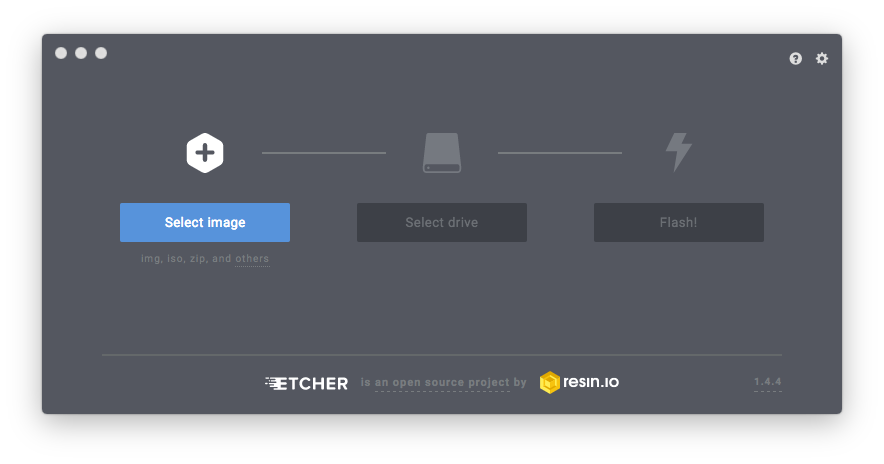首先点击左边的 Select Image 蓝色按钮，在弹出的对话框中选择下载好的镜像。
而后点击中间的 Select Drive 蓝色按钮，选择你的存储介质。
请再次确认已备份好 U 盘或者移动硬盘的数据，因为恢复镜像时会抹掉你整个磁盘的数据。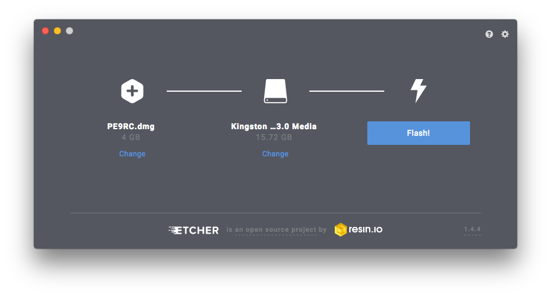再三确认镜像以及目标磁盘无误后，请点击最右边的 Flash 蓝色按钮以开始镜像恢复。
如下图所示，橙色进度条开始走动表示正在恢复中。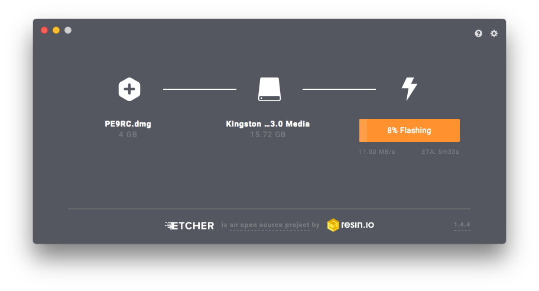镜像恢复后，Etcher 会帮你验证恢复后的数据。此时蓝色进度条开始走动。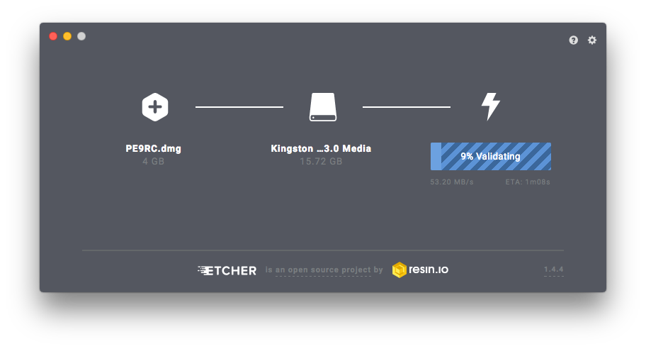验证完成后，你会看到如下界面代表一切就绪。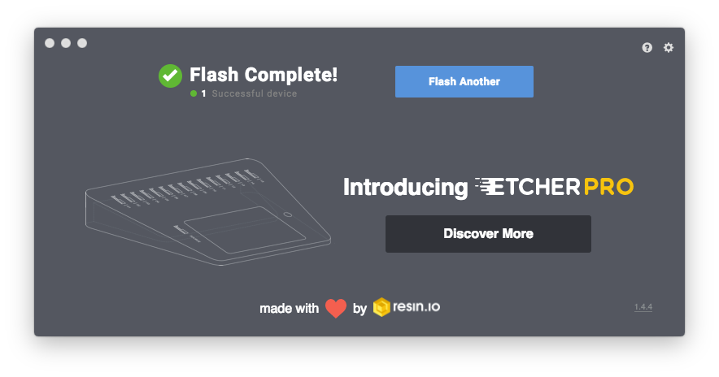至此镜像就已成功恢复到你的存储介质上了。
镜像恢复后，你的 U 盘或者移动硬盘就跟 PE 9 的磁盘完全一样了：
从下图我们可以看到，先是 200 MB 的 EFI 系统分区，然后跟着 816 MB (Windows 算法) 的 PE 启动分区，剩下的均为未分配空间。
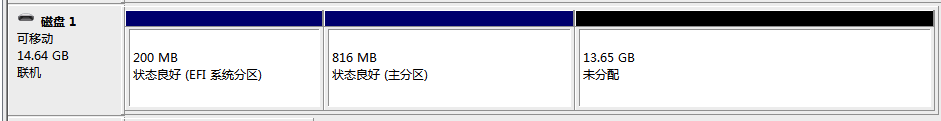
所以问题来了，U 盘或者移动硬盘剩下的可用空间你在 Finder 或者 Windows 资源管理器 中看不到了。
而对于 Windows 系统来说，你可以通过微软自带的磁盘管理、diskpart 或者其他第三方工具如傲梅分区助手或 Disk Genius 来为剩余空间创建一个新的分区。
但由于文件系统的限制，在 macOS 下你无法使用磁盘工具来为剩下的空间创建一个新的分区了。
编辑分区表以恢复可用空间（进阶）
因此在本部分我们将着重讲解如何在 macOS 下"恢复"剩余的空间。
请注意：本部分以一枚 16 GB 的 U 盘为例，使用命令行工具直接编辑分区表，不适合新手操作。
我们将使用系统自带的 GPT 分区表编辑工具 gpt 命令来手动为剩余可用空间创建一个分区。
首先我们打开终端，输入 diskutil list 来查看 U 盘的标识符。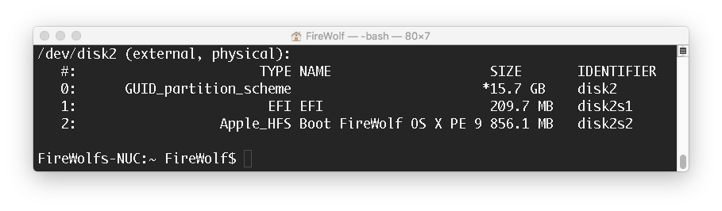从上图我们可以看到这个 16 GB 的 U 盘的标识符为 /dev/disk2 下面只有两个分区。剩下的 11 GB 多的空间"消失"了。
接下来我们继续在终端输入 sudo gpt -r show disk2 来查看当前 U 盘的分区表信息。
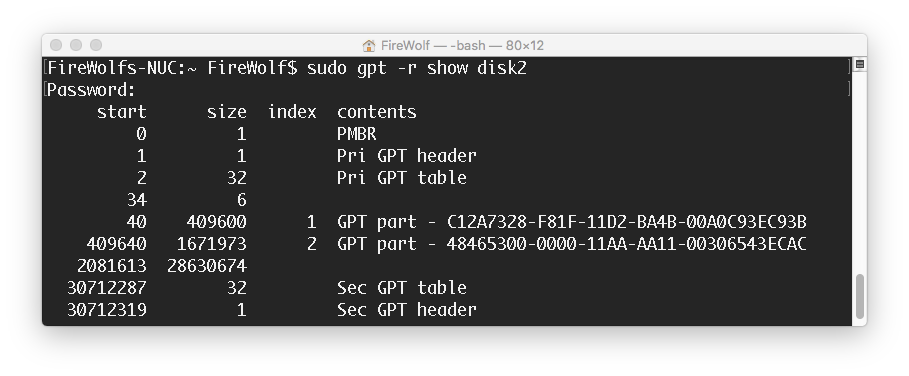现在我们把目光集中在上图中 GPT part 字样上，先来简略了解下上图的信息都是什么意思。
我们可以看到第一个分区，它的唯一标识符 (GUID) 为 C12A7328-F81F-11D2-BA4B-00A0C93EC93B 意味着这是我们的 EFI 系统分区，起始于第 40 扇区，大小为 409600 个扇区，即终止于第 409640 扇区。
当前 U 盘的扇区大小默认为 512 字节，所以我们可以计算出第一个分区的大小为：
409600 * 512 = 209715200 bytes = 209.7 MB （按 macOS 的 1 MB = 1000 Bytes 计算方式）
同理，我们也可以看到第二个分区，也就是 PE 的启动分区，起始于第 409640 扇区，大小为 1671973 个扇区，即终止于第 2081613 扇区。它的唯一标识符 48465300-0000-11AA-AA11-00306543ECAC 意味着这是一个使用 HFS+ 文件系统的分区。
讲到这里，我相信你已经对 GPT 分区表感到不是那么陌生了吧。
那么现在我们把目光转移到第三个"分区"（下图绿色标注的条目）上。
我们可以看到这个分区目前没有对应的唯一标识符，属于未分配的可用空间。
在本例中，它起始于第 2081613 扇区，大小为 28630674 扇区，即终止于第 30712287 扇区，也就是说可用空间约为 14 GB。
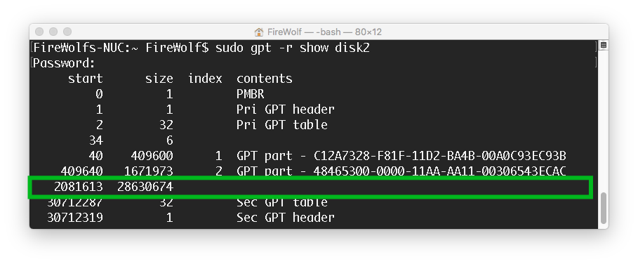
（存储介质的容量不同，会导致你看到不同的扇区数。请按自己的实际情况变通地分析。）
现在我们将要在这块未分配的可用空间上创建一个新的 HFS+ 分区。
苹果要求 HFS+ 分区后需要留有 128 MB 的可用空间，即 262144 个扇区。
也就是说，在开始创建之前，我们需要重新计算这个新分区的大小。
这块分区的起始扇区变更为 2081613 + 262144 = 2343757，并且容量变为 28630674 - 262144 = 28368530 个扇区了。
计算好扇区数后，我们先在终端输入 diskutil unmountDisk /dev/disk2 来卸载整个 U 盘。 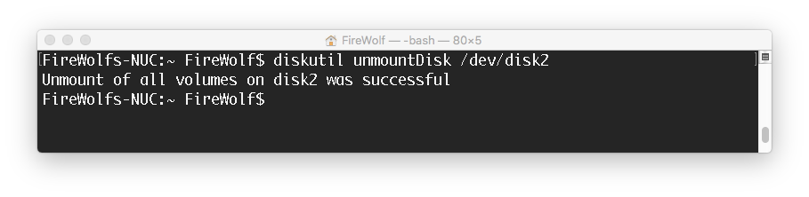待磁盘卸载后，我们继续输 sudo gpt add -b 2343757 -s 28368530 -t hfs disk2 而后回车来创建新分区。
这里的 -b 参数指定起始扇区数，-s 参数指定容量，-t 参数指定分区的类型。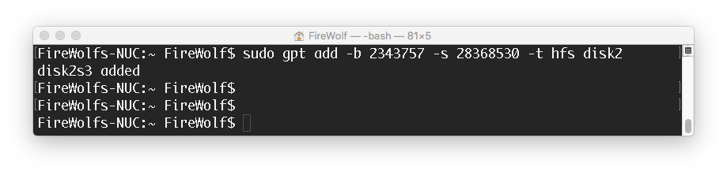如上图所示，我们可以看到新的分区已创建完成，标识为 /dev/disk2s3。
但我们只是创建了分区，还没有为它创建文件系统。
我们继续在终端输入 diskutil erasevolume JHFS+ "Data" /dev/disk2s3 。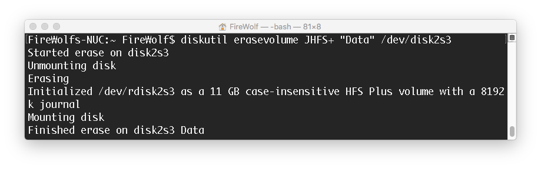稍加等待，系统就为这个新的分区创建好了文件系统（格式化）了。
至此我们就找回来『消失』的可用空间。